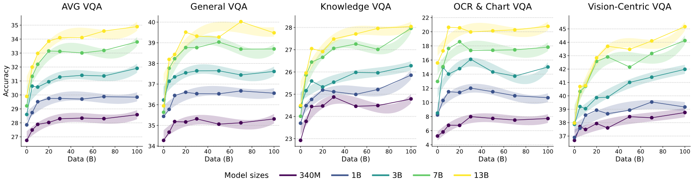

Highlights
How do LLMs, pre-trained only on language, develop rich visual priors?
Our work systematically reveals that LLMs don't just accidentally learn about the visual world; they develop distinct visual priors from language pre-training. We show these priors are composed of two separable components: a reasoning prior and a perception prior, each with unique origins. This allows us to create a data-centric recipe to deliberately cultivate visual abilities in LLMs from the ground up.
Reasoning from coding/math/academic
An LLM's visual reasoning ability is primarily developed by pre-training on reasoning-centric data like code, math, and academic texts.
Perception from diversity
The visual perception ability emerges more diffusely from broad, diverse corpora (like web-crawl) rather than a specific data type.
A vision-aware pre-training recipe
The optimal data mix for pre-training vision-aware LLMs is heavily skewed towards reasoning data (>50%) with a smaller portion about visual-world (~15%).
What are Visual Priors?
We frame visual priors as implicit knowledge or prior vision capabilities encoded in LLMs, whose primary effect is to grant both enhanced capability for vision tasks and greater ease of transfer to vision.
Evidence of Visual Priors
There are several phenomena that demonstrate the existence of visual priors:
Programmatic Visual Knowledge
LLMs can generate executable code to render complex 2D and 3D scenes, demonstrating an understanding of visual concepts like object properties and spatial layouts purely from text.
Data-Efficient Adaptation
When connected to a vision encoder, LLMs can be adapted for high-level visual reasoning tasks using a small amount of image-text data, bypassing the need for massive multimodal pre-training.
LLMs as Vision Encoders
The transformer layers from a text-trained LLM can be repurposed as powerful visual encoders for tasks like image classification and segmentation, even outperforming vision-specific models.
Experimental Settings
LLM Pre-training
We pre-train a suite of decoder-only Transformer models adhering to the Llama-3 architecture, spanning five scales: 340M, 1B, 3B, 7B, and 13B parameters. The default setting uses a 3B model trained on 30B tokens. Training data is composed of 16 sources.
MLLM Adaptation
We adopt a two-stage adaptation strategy. First, a simple MLP projector aligns a frozen vision encoder (MetaCLIP-B/16 by default) with the frozen LLM using 1M vision-language data. Second, supervised fine-tuning uses 3.5M of language and vision-language instruction data for multimodal instruction-following abilities.
Evaluation Protocol
MLLM evaluation covers 16 public benchmarks grouped into four key categories: General (e.g., GQA), Knowledge (e.g., MMMU), OCR & Chart (e.g., TextVQA), and Vision-Centric (e.g., RealWorldQA). LLM language evaluation is based on 10 benchmarks.
Demystifying LLM Visual Priors: Six Findings
Increasing model size (340M to 13B) and data volume (0B to 100B tokens) generally leads to stronger multimodal performance. However, this scaling varies significantly across VQA categories. General and Knowledge VQA improve steadily, but OCR & Chart VQA is far more sensitive to model size than data volume. Meanwhile, Vision-Centric VQA shows a unique pattern where the largest models benefit disproportionately from more data, while smaller models plateau early. This divergence demonstrates that different visual abilities do not scale uniformly.
By pre-training models on 16 distinct single-source datasets, we find that performance varies significantly. Notably, strong performance on Vision-Centric VQA and AVG VQA highly correlates with two types of data: reasoning-centric data (e.g., code, mathematics, academia) and corpora rich in visual world descriptions (e.g., arts, food). This suggests that different pre-training sources contribute to distinct and non-uniform visual priors.
The impact of reasoning-centric data is profound and progressive, with performance scaling steadily as its proportion in the mix increases up to 75%. In contrast, the contribution from data explicitly describing the visual world saturates quickly. A small initial amount is crucial but further increases yield diminishing returns.
Our goal is to derive a single, practical data mixture that excels on both language and vision tasks. Our approach proceeds in two main stages:
First, to maximize visual performance, we conduct a grid search and identify a vision-favorable mixture. The results show that the best performance on vision tasks comes from a blend of approximately 60% reasoning content and 15% visual content.
Next, to create a mixture that also performs well on language tasks, we derive a balanced mixture. We interpolate between a strong language-favorable baseline and our vision-favorable target. This process identifies `mix6` as the optimal balanced recipe, which achieves the highest overall rank by improving visual capabilities without a major drop in language proficiency.
A correlation analysis across performance data from 105 trained models reveals two loosely-coupled skill clusters: one for perception (General/OCR) and another for reasoning (Knowledge/Vision-Centric). The very weak correlation between these two groups suggests they are largely independent abilities. The reasoning prior originates from reasoning-centric data, while the perception prior's origins are more diffuse, emerging as a general byproduct of large-scale, diverse language modeling (with web-crawl data being the best single source).
We verify the universality of the reasoning prior. Regardless of the vision encoder used (e.g., MetaCLIP, DINOv2), performance on reasoning-heavy tasks shows a nearly identical upward trend as the proportion of reasoning data in the LLM's pre-training increases. Conversely, perception is more sensitive to the specific vision encoder.
Ablation studies on removing specific visual instruction tuning data show that removing perception-tuning data causes a large performance drop on perception-heavy tasks, while removing reasoning visual instruction tuning data has only a modest impact.
Three Hypotheses
We hypothesize that the perception prior from diverse data is not a uniform ability but has finer-grained, scale-dependent characteristics. To test this, we introduce the Multi-Level Existence Bench (MLE-Bench), which evaluates a model's ability to identify objects of varying sizes (Small: 0-30% of pixels, Medium: 30-60%, Large: 60-100%).
Experimental Result: Our evaluation on MLE-Bench shows that an LLM pre-trained on a broad web-crawl corpus is the top performer for perception. Its advantage is most pronounced for small-to-medium objects, where it establishes a clear lead over models trained on more specific data sources. This may suggest the diverse vocabulary in web-crawl forces the model to learn representations sensitive to fine-grained details.
We posit that by pre-training on reasoning-centric data, a model learns abstract, generalizable principles of logic and structure. This foundation is largely modality-agnostic, allowing the model to directly transfer this reasoning faculty to solve visual problems.
Experimental Result: We observe a clear trend: as the proportion of reasoning-centric data (e.g., code) increases from 0% to 100%, the resulting MLLM generates visual reasoning that is both more logically sound (Logical Soundness boosts from 4.52% to 9.52%) and significantly more detailed (Reasoning Depth sextuples from 8.31 to 53.25). This shows that a general reasoning framework learned from text is being directly applied to the visual domain.
One qualitative example is shown below:
Data like code are highly structured, much like the visual world. We hypothesize this shared structure means that representations learned from structured text are intrinsically more similar to, and thus more transferable to, the visual domain.
Experimental Result: Our analysis of the LLM-vision alignment score reveals a clear but non-monotonic trend. As we increase the proportion of structured reasoning data, the alignment score generally improves, suggesting learning from abstract structure fosters a more congruent latent space. The trend peaks at a 75% ratio before declining, which may be due to the model lacking the necessary general vocabulary at 100% to map abstract structures to diverse visual concepts.
Scaling Up Experiments
Scaling Up to 1T Tokens
To validate our findings in a larger scale, we pre-train two 7B parameter LLMs, each on 1T tokens:
- Language-Favorable Model: A model trained on a mix optimized for pure language tasks.
- Balanced Model: A model trained on our proposed balanced vision-aware recipe, designed to deliberately cultivate strong visual priors.
The results confirm our findings: the Balanced Model consistently outperforms the Language-Favorable model on all visual tasks while remaining competitive on language proficiency. This demonstrates that our data-centric pre-training recipe successfully imbues the LLM with stronger visual priors at a larger scale.
FAQ
We show how visual priors emerge from language-only LLM pre-training and, based on this understanding, demonstrate how we can deliberately leverage them to build more powerful MLLM capabilities.
Perception is the ability to 'see' the image—to process raw visual information like recognizing objects. In contrast, reasoning is the ability to think through and solve a visual problem, which requires logical inference. Our work shows that perception largely comes from broad, diverse text, while reasoning is primarily cultivated from structured, logic-centric text like code.
Building powerful MLLMs can start with strategically curating the language pre-training data. By creating a 'vision-aware' data mixture from the beginning, we can build a stronger foundation for multimodal tasks, leading to more capable and potentially more efficient models.
Our investigation centers on common adapter-style MLLM architectures, where a pre-trained vision encoder is connected to an LLM. The findings may not fully generalize to other approaches, such as models that are trained end-to-end on both vision and language data from the start.